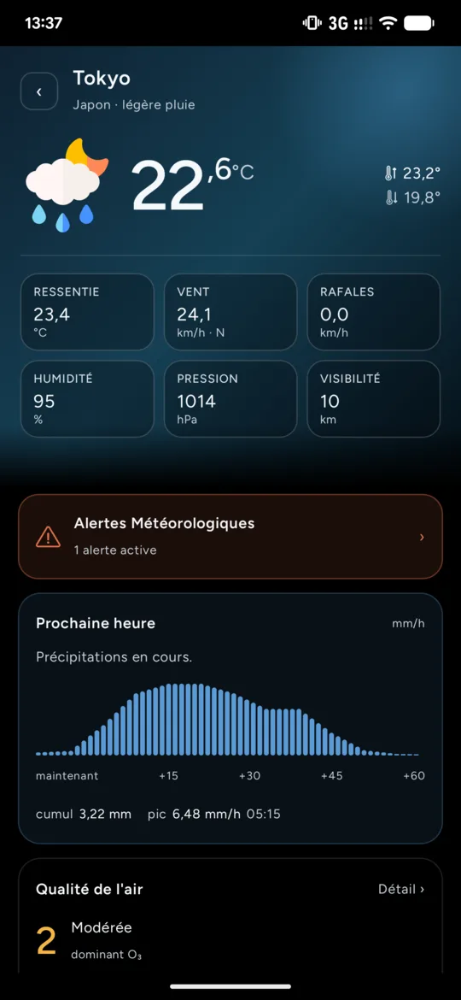
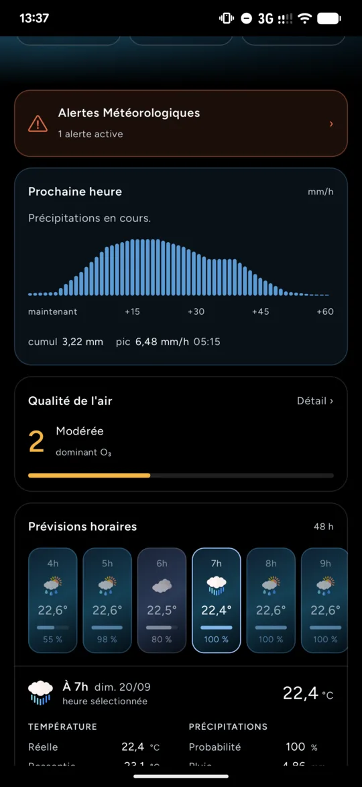
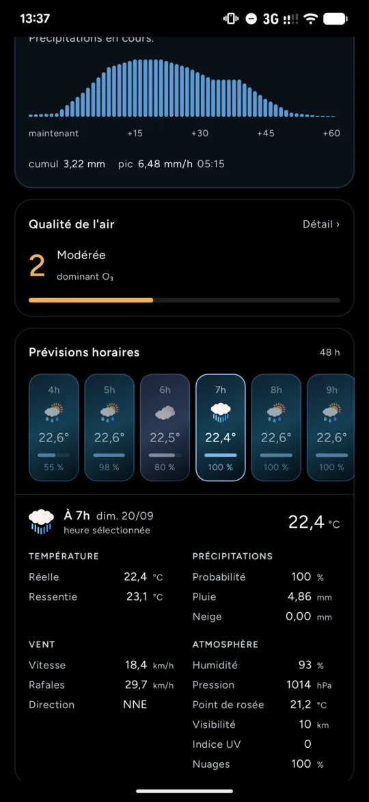
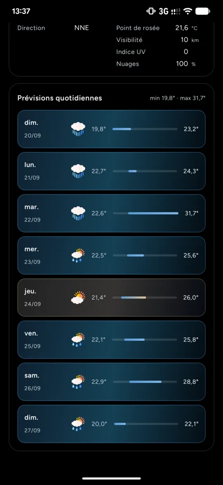
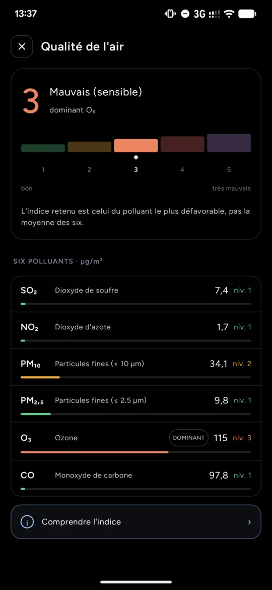
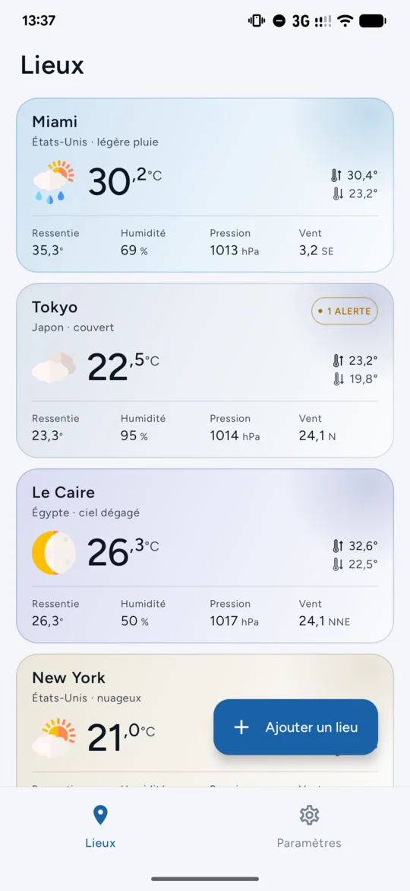

L'essentiel en un écran
Ressenti, vent et rafales, humidité, pression, visibilité, et les alertes en cours.
La pluie, minute par minute
Les 60 prochaines minutes, dessinées minute par minute : quand ça commence, quand ça s'arrête, et avec quelle force.
48 heures, heure par heure
Touchez une heure pour voir sa température, sa pluie, son vent et son ciel.
La semaine d'un regard
Huit jours, leurs minimales et maximales sur une même échelle.
L'air que vous respirez
Un indice de 1 à 5, et les six polluants qui le composent.
Clair ou sombre, comme votre téléphone
L'app suit le thème et la couleur d'accent de votre téléphone. Les widgets existent en trois tailles, avec la transparence de votre choix.
Sans compte, sans pistage
Vos lieux et votre propre clé OpenWeatherMap restent sur votre téléphone. La clé y est stockée chiffrée.
Logiciel libre
OpenWeather est publié sous licence GNU GPLv3. Lisez-le, compilez-le, améliorez-le.
Seul le nécessaire quitte votre téléphone
Les coordonnées de vos lieux vont à OpenWeatherMap, le texte de vos recherches à OpenStreetMap. Le détail.